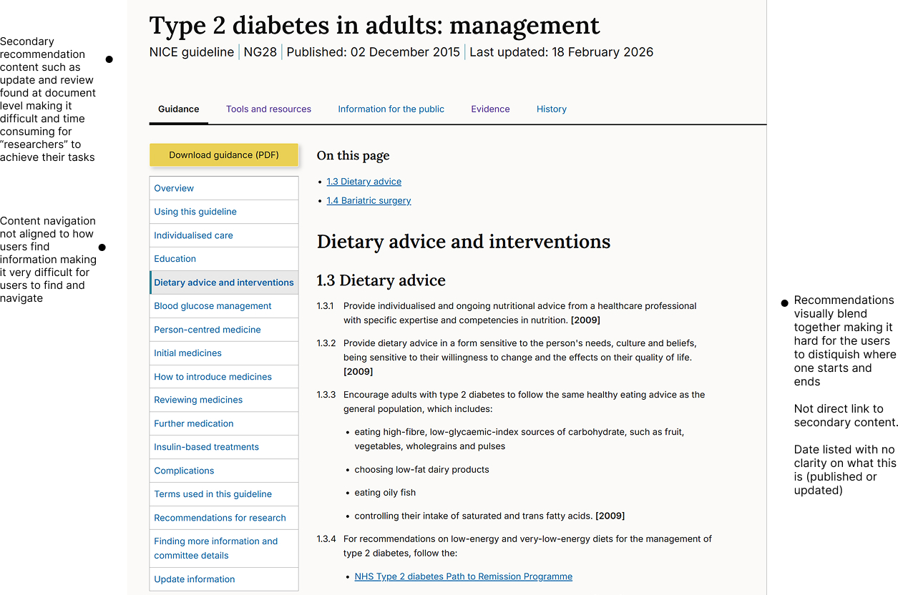

Outcome
Securing a £1m+ investment in a new CCMS platform through proof of concept
Led and de-risked the transformation of NICE's publishing and clinical guidance model to deliver the UX proof-of-concept required to secure £1M+ in funding for a new CCMS.
12% improvement in task completion
Achieved a 12% uplift in successful task completion by redesigning end-to-end clinical journeys. By aligning complex medical evidence with real-world decision-making workflows.
23% reduction in average time-to-answer
Reduced average 'time-to-answer' by 23% across core user journeys, through optimisation of the end to end content funnel.
Problem & Context
NICE Guidance is authored as static Word documents and published as fragmented HTML. This "document-first" approach resulted in poor discoverability and excessive time-on-task in high-pressure clinical environments.
Previous survey research gave indication that transitioning to a dynamic, layered content would reduce broken user journeys, and improve user speed-to-answer.
To protect the integrity of NICE's core offering, we needed to move beyond static publishing to a model that serves our users: the time-poor clinician (instant answers) and the academic researcher (deep-dive evidence).
My Role
- Led the redesign of the end-to-end user journey, optimising the content funnel which has resulted in a 23% reduction in 'time-to-answer'.
- Synthesized complex clinical evidence into structured content models that mirrored real-world medical decision-making, leading to a 12% increase in successful task completion.
- I de-risked a transformation of NICE's publishing and clinical guidance model to deliver the UX proof-of-concept required to secure £1M+ in funding for a new CCMS.
- Embedded collaborative rituals and continuous research loops, speeding up iteration cycles and fostering alignment between multi-disciplinary teams and stakeholders.
Approach
- Prioritised and validated user insights to develop journey maps for core archetypes: the "time-poor clinician" and the "deep-dive researcher" to inform design strategy.
- Established baseline UX metrics, measuring time-on-task and completion rates to quantify the friction in the current experience and track transformation success.
- Simplified topic content and hierarchy to align with the new content model, ensuring it met user needs and internal publishing workflows.
- Reframed assumptions into measurable hypotheses, using prototypes to stress-test assumptions and safely de-risk the transformation of NICE's core publishing model.
Before
